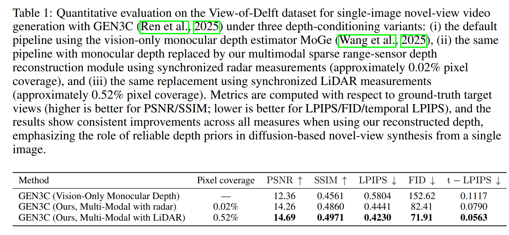
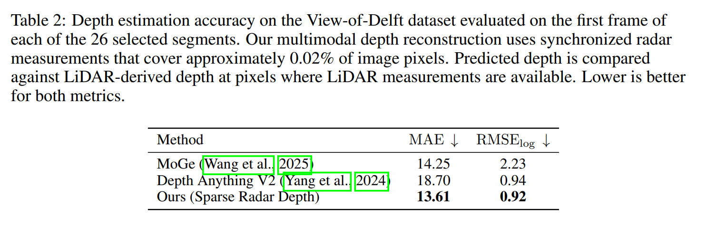
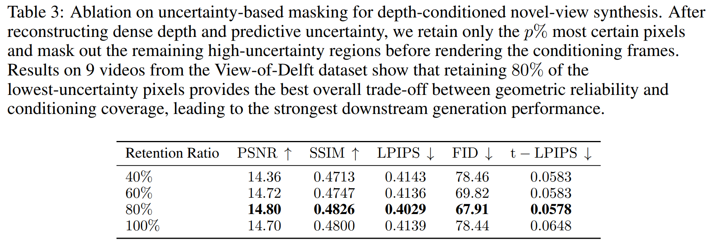

Experiments
Qualitative Results for Single-Image Novel View Synthesis
Across diverse View-of-Delft scenes, replacing monocular depth with sparse range-based reconstruction gives better geometric alignment and visibly fewer rendering artifacts in novel views.
Quantitative Results for Single-Image Novel View Synthesis
On View-of-Delft, replacing vision-only depth with our multimodal reconstruction improves all video-generation metrics for both sparse radar (0.02% coverage) and sparse LiDAR (0.52% coverage). Relative to the vision-only baseline, radar improves PSNR by about 15.4% and SSIM by 6.6%, while reducing LPIPS by 23.5%, FID by 46.0%, and temporal LPIPS by 29.3%; LiDAR further improves performance, reaching the best overall scores across all metrics.

Quantitative Results for Depth Estimation Accuracy
Against LiDAR depth on valid pixels, our sparse radar depth reconstruction achieves the lowest MAE and RMSE-log compared with monocular baselines.

Ablation Study: Uncertainty-Based Masking
Masking high-uncertainty depth regions improves conditioning quality; retaining the most certain 80% gives the best trade-off between geometric reliability and coverage.

Cite this work
A. Javadi, C.-S. Gau, K. D. Polyzos, and T. Javidi,
A Single Image and Multimodality Is All You Need for Novel View Synthesis,
ICLR 2026 Workshop.
@inproceedings{javadi2026singleimage,
title={A Single Image and Multimodality Is All You Need for Novel View Synthesis},
author={Javadi, Amirhosein and Gau, Chi-Shiang and Polyzos, Konstantinos D. and Javidi, Tara},
booktitle={ICLR 2026 Workshop},
year={2026},
}